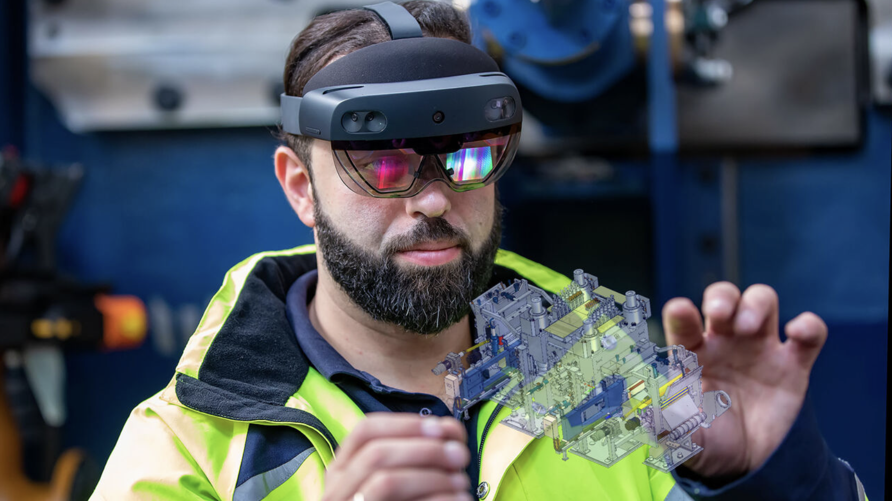
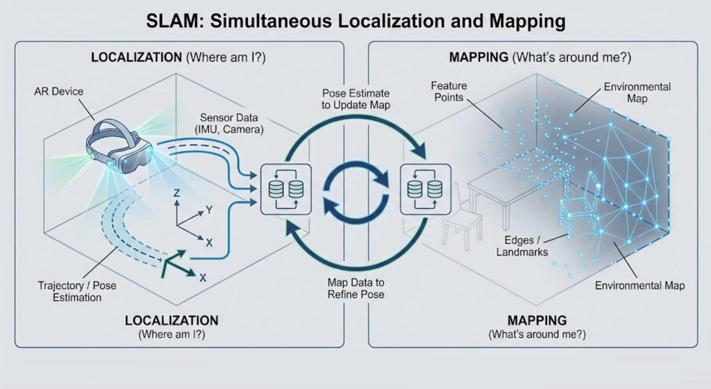
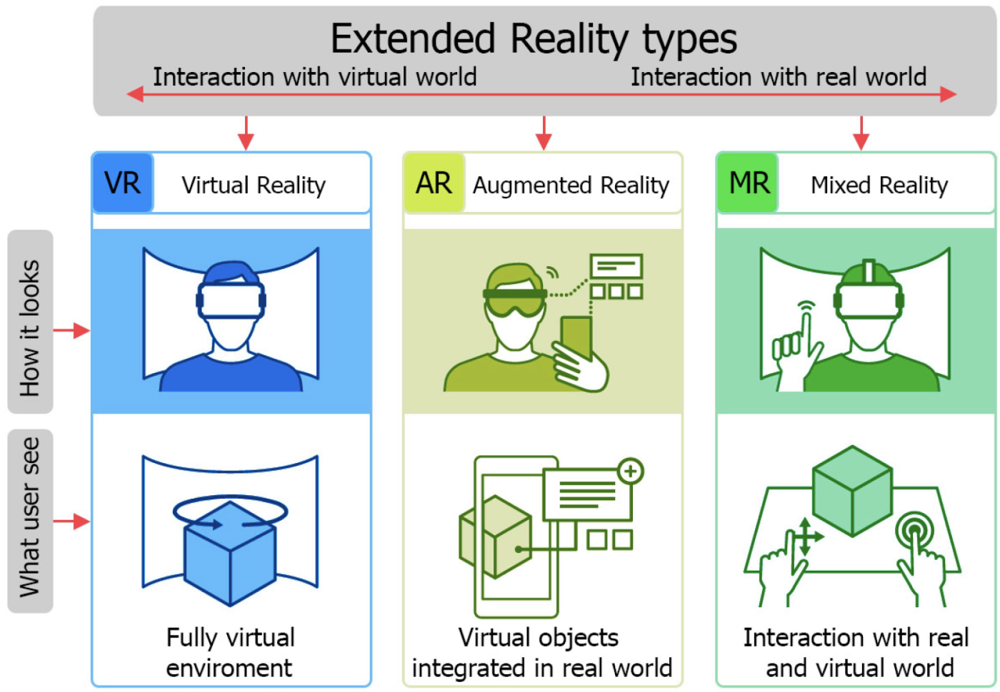

1. Introduction & Definition
Spatial Interfaces are technologies that allow people to interact with digital information as if it were located in the physical world or within a three-dimensional environment.
The concept is closely related to Spatial Computing, which refers to three-dimensional human–computer interaction techniques that take place in and around the user's body and physical environment, rather than being restricted to traditional computer screens. [1]
Unlike conventional interfaces, which generally display information on a flat two-dimensional screen, spatial interfaces allow digital objects, graphics and information to be positioned in three-dimensional space. Users can observe them from different angles, move around them and interact with them through physical movements.
Spatial computing combines several technologies and concepts, including Augmented Reality (AR), Virtual Reality (VR), Mixed Reality (MR) and Natural User Interfaces. These technologies provide different ways of connecting digital information with human perception and physical surroundings. The main purpose is to make interaction with computers more natural and contextual, allowing digital information to become part of the environment in which people live and work. [2] [3]

2. History & Evolution
The development of Spatial Interfaces is closely connected to the evolution of computer graphics, Virtual Reality and Augmented Reality. An important milestone was the Cave Automatic Virtual Environment (CAVE), invented in 1992 at the University of Illinois at Chicago by Carolina Cruz-Neira, Daniel J. Sandin, and Thomas A. DeFanti. It used projectors on the walls of a room-sized cube to create an immersive three-dimensional environment. [6]
During the same period, research into Augmented Reality advanced. The Virtual Fixtures system, developed at the U.S. Air Force's Armstrong Laboratory in 1992, was one of the early systems to combine virtual elements with the physical environment. [2]
As computers, displays and tracking technologies improved, spatial interfaces became more practical. Smartphones and tablets introduced new forms of AR, while head-mounted displays made immersive experiences more accessible. Modern examples include Microsoft HoloLens, Magic Leap and Apple Vision Pro. [4]
3. How It Works
Spatial Interfaces work by combining digital displays, sensors, tracking systems and software that interpret the user's position and surroundings. [1]
The system must understand both the physical environment and the position of the user in order to place digital information correctly in three-dimensional space.
Environmental Sensing
Spatial computing devices use sensors such as RGB cameras, depth cameras, 3D trackers and Inertial Measurement Units (IMUs). These sensors collect information about the surrounding environment and the user's movements.
Spatial Mapping and Recognition
Computer vision techniques analyse the environment to recognise objects, surfaces and spatial structures. Systems can create three-dimensional maps of rooms and other physical environments.
Technologies such as Simultaneous Localization and Mapping (SLAM) help devices estimate their position while mapping their surroundings. [1]
Digital Content Rendering
Once the environment has been analysed, the software generates digital objects and information and positions them in the appropriate locations.
In Augmented Reality (AR), virtual graphics are superimposed onto the user's view of the real world. In Virtual Reality (VR), the system generates an artificial environment that replaces the user's direct view of the physical surroundings.
User Interaction
Users can interact with digital objects through different input methods, including hand gestures, head movements, eye tracking, controllers, voice and touch. [5]
The system detects these actions and updates the digital environment accordingly, allowing users to select, move, rotate or manipulate virtual objects.

4. Types & Technologies
Spatial Interfaces include different technologies that provide different relationships between the physical and digital worlds.
Augmented Reality (AR)
Augmented Reality adds digital information and computer-generated objects to the real-world environment. Users can see both their physical surroundings and additional virtual content through devices such as smartphones, tablets or head-mounted displays.
AR combines real and virtual elements, supports real-time interaction and requires accurate positioning of virtual objects in relation to the physical environment. [2]
Virtual Reality (VR)
Virtual Reality creates a computer-generated environment in which users can experience and interact with a simulated world.
VR commonly uses head-mounted displays and tracking systems to reproduce the user's movements and perspective. Users can look around, move through the virtual environment and interact with digital objects.
Unlike AR, which adds virtual content to the real world, VR aims to replace the user's perception of the physical environment with a simulated one. [3]
Mixed Reality (MR)
Mixed Reality combines physical and digital elements, allowing virtual objects to appear integrated into the real environment.
The terminology surrounding AR and MR can overlap, and their definitions are not always used consistently. However, both involve combining digital information with the perception of the physical world. [2]
Spatial Displays and Projection Systems
Spatial interaction does not always require a headset. Projection mapping can place digital graphics directly onto physical objects, buildings or other surfaces. [7]
Another example is the CAVE system, which uses multiple projections to create an immersive three-dimensional environment around the user. [6]

5. Applications, Impact & Future
Spatial Interfaces have applications in several fields, including education, medicine, engineering, entertainment and industrial environments.
Applications & Use Cases
Education and Training: AR and VR can create interactive learning environments. Students can explore three-dimensional models, while virtual environments can simulate situations that would be difficult or dangerous to reproduce in real life.
Engineering and Design: Spatial computing allows engineers and designers to visualise and interact with three-dimensional models of buildings, machines and other structures.
Medicine: Virtual and augmented reality have applications in medical training and healthcare. AR has also been explored for displaying information during surgical procedures.
Navigation and Everyday Life: AR can display directions and additional information directly over the user's view of streets and physical surroundings.
Entertainment and Gaming: VR provides immersive gaming experiences, while AR combines digital objects with real-world surroundings. [2] [3]
Real-World Examples
Microsoft HoloLens: A head-mounted device associated with Mixed Reality, allowing users to view digital content together with their physical surroundings. It has been explored in industrial and engineering environments, including a collaboration between Microsoft and Airbus to support aircraft design processes.
Apple Vision Pro: A spatial computing device that uses a head-mounted display to provide interaction with digital content in a spatial environment.
Magic Leap: A company that develops spatial computing and augmented reality technology. Its head-mounted devices combine digital content with the user's view of the physical environment. [1]
CAVE (Cave Automatic Virtual Environment): An immersive virtual reality system consisting of a room-sized cube with projections on several walls. Users wear 3D glasses and can walk around virtual objects while sensors track their movements. [6]
Advantages
Spatial Interfaces offer several advantages compared with traditional screen-based interaction:
- More immersive and interactive experiences.
- Natural interaction through physical movements and gestures.
- Better visualisation and manipulation of complex 3D models.
- Contextual information integrated into physical surroundings.
Disadvantages
However, they also present some limitations:
- Specialised hardware can be expensive.
- Tracking and environmental recognition must be accurate.
- Display quality, field of view and latency can affect the experience.
- Prolonged use can cause discomfort, fatigue or safety concerns. [8]
- Some devices collect sensitive information about users and their surroundings.
Ethical & Social Impact
The development of Spatial Interfaces raises important questions about privacy, safety and accessibility. Cameras, sensors and tracking systems can collect information about users' movements, locations and physical environments. [1]
Safety is another concern, as interacting with virtual content can reduce awareness of real-world surroundings and increase the risk of accidents. Prolonged use of immersive displays may also cause discomfort.
Finally, the high cost of specialised hardware may limit access to these technologies for some users and organisations.
Future Developments & Conclusion
Spatial computing continues to develop through improvements in sensors, displays, computer vision and tracking technologies. Future developments include smaller and more portable head-mounted displays, augmented reality glasses, more accurate environmental recognition and more natural interactions through hand movements, eye tracking and voice.
In conclusion, Spatial Interfaces represent an important development in human-computer interaction. By moving digital information beyond traditional two-dimensional screens and into physical or virtual three-dimensional environments, technologies such as AR, VR and MR offer new ways to interact with digital content. Their continued development may expand their applications in education, medicine, engineering, entertainment and industry.
Sources (APA Style)
- Wikipedia contributors. (n.d.). Spatial computing. Wikipedia. https://en.wikipedia.org/wiki/Spatial_computing. Article Link
- Wikipedia contributors. (n.d.). Augmented reality. Wikipedia. https://en.wikipedia.org/wiki/Augmented_reality. Article Link
- Wikipedia contributors. (n.d.). Virtual reality. Wikipedia. https://en.wikipedia.org/wiki/Virtual_reality. Article Link
- Wikipedia contributors. (n.d.). Head-mounted display. Wikipedia. https://en.wikipedia.org/wiki/Head-mounted_display. Article Link
- Wikipedia contributors. (n.d.). Gesture recognition. Wikipedia. https://en.wikipedia.org/wiki/Gesture_recognition. Article Link
- Wikipedia contributors. (n.d.). Cave automatic virtual environment. Wikipedia. https://en.wikipedia.org/wiki/Cave_automatic_virtual_environment. Article Link
- Wikipedia contributors. (n.d.). Projection mapping. Wikipedia. https://en.wikipedia.org/wiki/Projection_mapping. Article Link
- Wikipedia contributors. (n.d.). Immersion (virtual reality). Wikipedia. https://en.wikipedia.org/wiki/Immersion_(virtual_reality). Article Link